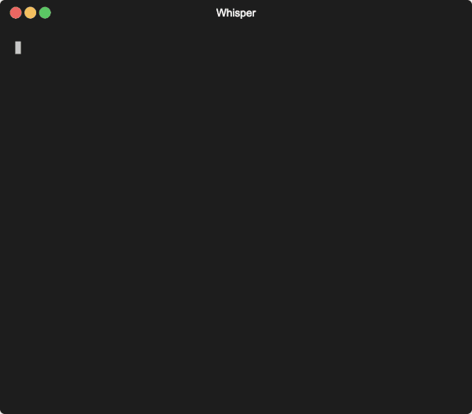
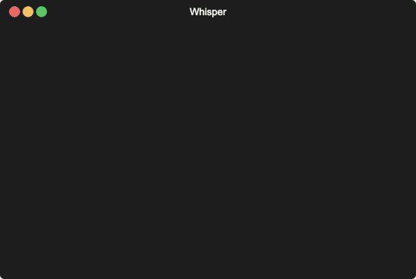
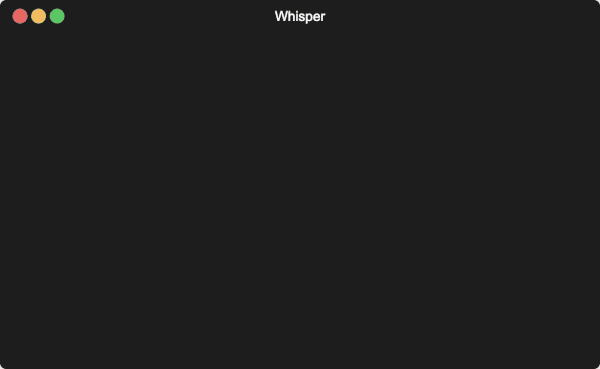
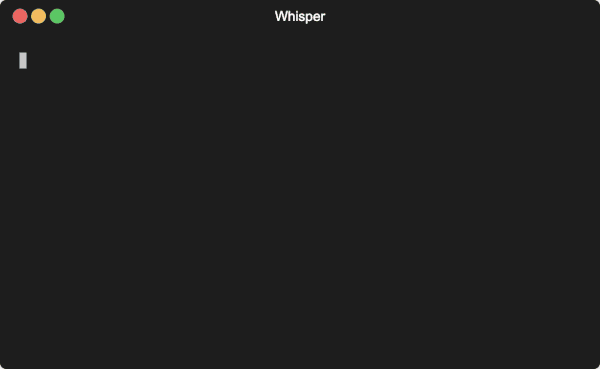

User Guide
Below is a guide to help you get the most out of Whisper.
Setup / Config
The first thing you should do is setup your config by running
This will create a whisper.toml file in the ~/.whisper directory. You can then edit this file to set the API keys for the different LLM providers you want to use.
Edit A Config Value
You can always edit the whisper.toml file directly to change your config. But you can also use the whisper config set command to change the config. For example, to change the API key for the OpenAI provider, you can run:
Or, if you have your key stored in an environment variable, you can run:
Read A Config Value
You can read a config value by running whisper config get <key>. For example, to read the API key for the OpenAI provider, you can run:
Show All Config Values
You can show all the config values by running whisper config show.
List all available code themes
You can list all the available code themes by running whisper config themes.
Local Models With GPT4All
Whisper supports using local models via GPT4All. To use a local model, you can set the local_path and local_model for the gpt4all provider in the whisper.toml file. For example:
[gpt4all]
local_path = "~/.local/share/nomic.ai/GPT4All"
local_model = "Meta-Llama-3-8B-Instruct.Q4_0.gguf"
If you're unfamiliar with GPT4All, you can learn more here.
Asking Questions
Asking your LLM questions is easy! After you've setup your whisper config, you can start asking questions by running whisper ask "<your question>".
Or even simpler, the CLI defaults to the ask sub-command, so you can simply run whisper "<your question>" as a convenience.
❯ whisper "What is the capital of france?"
╭────────────────────────────── Capital of France ───────────────────────────────╮
│ The capital of France is Paris. │
╰────────────────────────────────────────────────────────────────────────────────╯
Using A Different Provider
You're config file defaults to using the OpenAI provider. But you can change that with the -p/--provider option. For example, to use the Anthropic provider, you can run:

You can also change the default provider in the whisper.toml file, or by running:
Using A Different Model
You can easily change the model using the -m/--model option.

Asking Code Related Questions
Displaying beautiful code snippets in your terminal is one of the core features of Whisper...
Using A Different Code Theme
❯ whisper \
"What's that terminal command to close a process that is using port 8080?" \
-t coffee \
The default theme is solarized-dark. But you can change that at runtime with the -t/--theme option. For example, to use the github theme, you can run:

If you want to permanently change the theme, you can edit the theme option in the whisper.toml file.
Copy A Snippet
You can copy a snippet to your clipboard using the --copy option. For example:

You can also change the default behavior of whether or not to copy a snippet by setting the copy_snippet option in the whisper.toml file, or by running:
Using The System Prompt
You can use the -s/--system option to change the system prompt.
Piping (|) Context To The Model
Sometimes you might want to interrogate a file or content from the web. You can do this by piping the content to the model. For example: